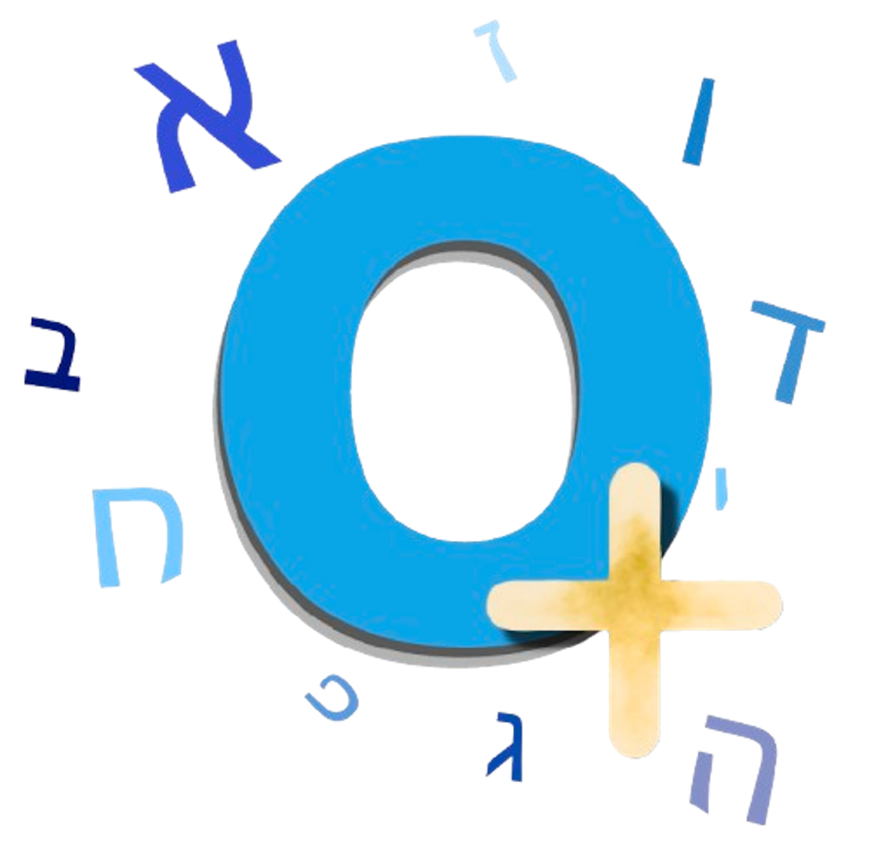

Otiyot
+
Hebrew reading tool
Customize
▼
✓ All on
✕ All off
🎨
Color Niqqud
Highlight vowel marks
א
Dyslex-Kriyah Font
Dyslexia-friendly typeface
🔍
Reading Focus
Blur page when text is selected
↔
Letter Spacing
Extra space between letters
0px